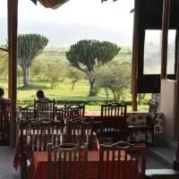
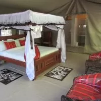

Happy-Trails-Travel-Agency
Maasai Mara
Catch the seasonal show of wildebeest leaping towards fresh grass. See giant pods of hippos bathe in the river’s water and some of Africa’s largest crocodiles basking on its shores. It’s even been possible to spot Black Rhino – an extremely endangered animal – on the 3-hour drive.
For direct bookings, we are pleased to offer one complimentary excursion to the Masai Mara National Reserve (excluding park fees) when booking minimum 4 nights during High season (01 Jun to 31 Oct).
If luxury and private safari is what you long for, you’ll find both in abundance at Olarro. Sanctuaries for indulgence sitting within the Masai Mara region, our all inclusive luxury lodge retreats offer a truly exclusive experience of Kenya’s wildest lives.
With two different lodges on offer at Olarro, guests can choose between a secluded hilltop haven and a lodge meticulously planned to offer uninterrupted savannah views.
While each opulent outpost offers a very different perspective, both escapes promise privileged African safari views. Our luxury lodges lie within Olarro’s very own 20,000-acre wilderness – owned entirely by us, open only to our guests.
Oseki Maasai Mara Camp offers traditional cottages located in the middle in the bush with each their own bathroom and tents which each a bathroom. We offer full board!

